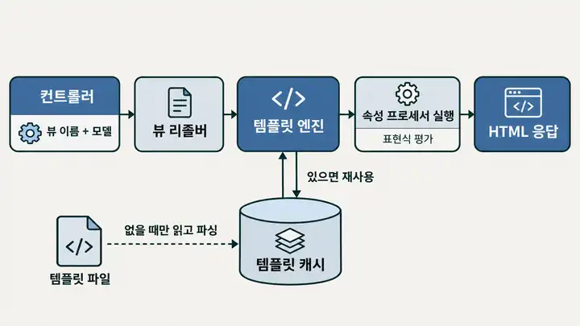
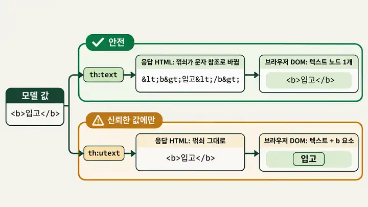
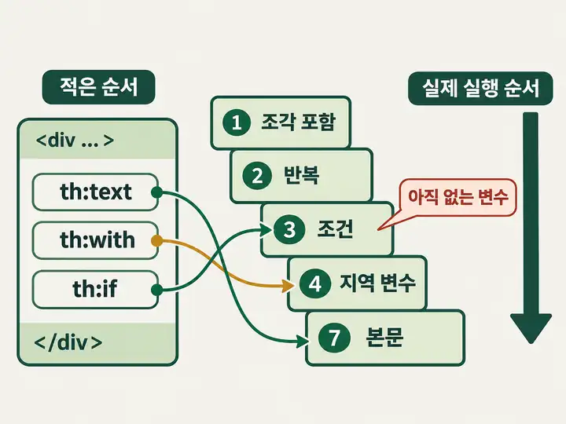
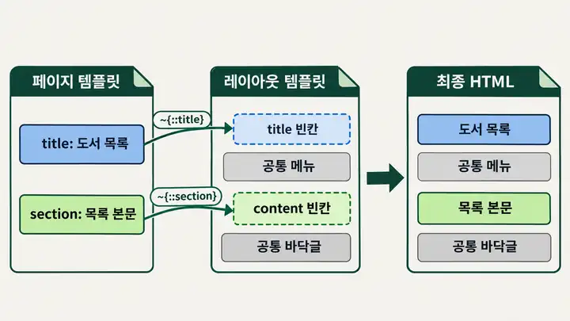

스프링 MVC 2편 / 01회
타임리프 — 기본 기능
타임리프의 기본 문법 전부를 "템플릿이 이벤트 열로 파싱되고, 속성 프로세서가 정해진 순서로 실행되며, 표현식은 SpringEL이 리플렉션으로 평가한다"는 내부 흐름 위에서 설명한다.
오늘 끝나면 할 수 있는 것
- 컨트롤러가 뷰 이름을 반환한 뒤 응답 바이트가 나가기까지 뷰 리졸버, 템플릿 엔진, 템플릿 캐시, 속성 프로세서가 각각 무엇을 하는지 순서대로 설명할 수 있다.
th:text와th:utext,[[...]]와[(...)]의 출력을 예측하고, 이스케이프가 브라우저의 HTML 파서에서 무엇을 막는지 설명할 수 있다.${book.title}같은 변수 표현식이 SpringEL에서 어떤 접근자를 거쳐 게터 호출이 되는지,null에서 프로퍼티를 읽으면 왜 예외가 나는지 추적할 수 있다.- 한 태그에
th:each,th:if,th:with,th:text가 함께 있을 때 실행 순서를 우선순위 표로 예측하고, 순서 때문에 생기는 버그를 찾아낼 수 있다. - 조각 표현식
~{...}으로 조각을 삽입·대체하고, 조각을 인자로 넘기는 레이아웃이 어떤 값의 흐름으로 완성되는지 그릴 수 있다.
핵심 강의 → 핵심 요약 → 실무 재판단 → 적용 연습 → 이해 확인
01 핵심 강의
이 강의의 차례 · 소제목 13개
이 회차의 질문: 서버가 HTML을 "만든다"는 것은 무슨 일인가
스프링 MVC 1편에서 요청이 DispatcherServlet을 지나 컨트롤러에 닿고, 컨트롤러가 반환한 뷰 이름이 뷰 리졸버(view resolver)를 거쳐 뷰 객체가 되는 과정을 보았다. 그 마지막 칸, 뷰가 모델을 받아 HTML을 써 내려가는 부분은 "타임리프가 렌더링한다"는 한 줄로 넘어갔다. 이 권은 그 칸을 여는 것으로 시작한다.
서버 사이드 렌더링(server-side rendering)은 서버가 완성된 HTML 문서를 응답 본문으로 보내는 방식이다. 브라우저 입장에서는 정적 파일을 받은 것과 구별되지 않는다. 차이는 서버 안에 있다. 정적 파일은 디스크의 바이트를 그대로 내보내면 되지만, 동적 페이지는 요청마다 다른 데이터를 HTML 사이에 끼워 넣어 문자열을 새로 조립해야 한다.
이 조립을 자바 코드로 직접 하면 곧바로 세 가지가 곤란해진다. 첫째, HTML이 자바 문자열 리터럴 안에 흩어져 화면의 구조가 보이지 않는다. 둘째, 데이터에 <나 &가 들어 있으면 브라우저가 그것을 태그로 해석해 화면이 깨지거나 공격 코드가 실행된다. 셋째, 머리글·바닥글처럼 여러 페이지가 공유하는 부분을 재사용할 방법이 없다. 템플릿 엔진(template engine)은 이 셋을 맡는 도구다. HTML을 중심에 두고 데이터가 들어갈 자리만 표시하게 하며, 출력할 때 문자를 안전하게 바꾸고, 템플릿을 조각내 조합하는 수단을 준다.
타임리프(Thymeleaf)의 문법은 양이 많아 보이지만 밑에 깔린 장치는 몇 개뿐이다. 이 회차는 문법을 나열하기 전에 그 장치부터 세운다. 답하려는 질문은 다음과 같다.
- 템플릿 파일은 언제 읽히고, 어떤 형태로 메모리에 남으며, 요청마다 무엇이 다시 실행되는가.
th:text="${book.title}"한 줄에서 누가${...}를 해석하고, 누가getTitle()을 호출하는가.- 같은 값을 HTML 본문, 속성, URL, 자바스크립트 안에 넣을 때 왜 문자 변환 규칙이 서로 달라야 하는가.
- 한 태그에 속성 여러 개를 쓰면 어떤 순서로 실행되는가. 내가 쓴 순서인가.
- 레이아웃 파일 하나로 여러 페이지의 뼈대를 공유할 때, 페이지와 레이아웃 사이에 무엇이 오가는가.
프로젝트 구성과 타임리프가 끼어드는 자리
스프링 부트에서 타임리프를 쓰려면 웹 스타터와 타임리프 스타터 두 개면 된다. 그레이들 기준으로 의존성은 다음과 같다.
dependencies {
implementation 'org.springframework.boot:spring-boot-starter-web'
implementation 'org.springframework.boot:spring-boot-starter-thymeleaf'
}스프링 부트 3.5의 의존성 버전 표를 보면 이 스타터가 끌어오는 것은 org.thymeleaf:thymeleaf와 org.thymeleaf:thymeleaf-spring6의 3.1 계열이다. 앞의 것이 템플릿 엔진 본체이고, 뒤의 것이 스프링 프레임워크 6과 엔진을 잇는 통합 모듈이다. 통합 모듈은 스프링 버전별로 따로 있어서 스프링 5용은 thymeleaf-spring5다.
스타터를 넣으면 부트의 자동 구성이 세 가지 객체를 빈으로 등록한다. 템플릿 파일을 찾아 읽는 템플릿 리졸버(SpringResourceTemplateResolver), 템플릿을 처리하는 엔진(SpringTemplateEngine), 스프링 MVC의 뷰 리졸버 인터페이스를 구현한 ThymeleafViewResolver다. 설정값은 spring.thymeleaf.* 프로퍼티로 바꾸는데, 스프링 부트 3.5 소스의 ThymeleafProperties에 적힌 기본값은 아래와 같다.
| 프로퍼티 | 기본값 | 의미 |
|---|---|---|
spring.thymeleaf.prefix | classpath:/templates/ | 뷰 이름 앞에 붙는 경로 |
spring.thymeleaf.suffix | .html | 뷰 이름 뒤에 붙는 확장자 |
spring.thymeleaf.mode | HTML | 템플릿 모드 |
spring.thymeleaf.encoding | UTF-8 | 템플릿 파일 인코딩 |
spring.thymeleaf.cache | true | 파싱한 템플릿을 캐시할지 |
spring.thymeleaf.enable-spring-el-compiler | false | SpringEL 컴파일러 사용 여부 |
컨트롤러가 "books/list"를 반환하면 리졸버는 접두사와 접미사를 붙여 classpath:/templates/books/list.html을 찾는다. 소스 트리에서는 src/main/resources/templates/books/list.html이다. 여기까지는 1편에서 본 뷰 리졸버의 일반 규칙과 같다. 달라지는 것은 그다음이다. JSP였다면 서블릿 컨테이너가 JSP 파일을 자바 서블릿으로 번역해 실행했겠지만, 타임리프 뷰는 서블릿 컨테이너의 도움 없이 엔진이 직접 템플릿을 읽고 처리해 응답의 Writer에 쓴다.
- 컨트롤러 반환핸들러 메서드가 모델에 데이터를 담고 뷰 이름
books/list를 반환한다. - 뷰 리졸버
ThymeleafViewResolver가 뷰 이름으로 타임리프 뷰 객체를 만든다. - 컨텍스트 구성뷰가 모델, 요청 정보, 로케일을 타임리프 컨텍스트(context) 하나로 묶는다.
- 템플릿 해석엔진이 템플릿 리졸버에게
books/list를 물어 리소스 위치를 얻는다. 캐시에 파싱 결과가 있으면 파일을 읽지 않는다. - 파싱캐시에 없으면 파일을 읽어 여는 태그, 텍스트, 닫는 태그 같은 이벤트의 열로 바꾸고 캐시에 넣는다.
- 처리이벤트를 앞에서부터 흘려보내며
th:*속성이 붙은 태그에서 프로세서를 실행한다. 표현식은 이때 평가된다. - 출력결과 마크업을 응답
Writer에 쓴다. 서블릿 컨테이너가 이를 바이트로 인코딩해 소켓으로 보낸다.

캐시 설정은 개발과 운영에서 뜻이 다르다. 타임리프 튜토리얼은 캐시가 담는 것을 "템플릿 파일을 읽고 파싱해 얻은 이벤트의 열"이라고 설명하고, 템플릿 캐시의 기본 최대 크기를 200개 항목으로 적는다. 운영에서는 이 캐시 덕분에 요청마다 디스크를 읽고 파싱하는 비용이 사라진다. 반대로 개발 중에는 템플릿을 고쳐도 캐시된 옛 결과가 계속 쓰인다. 스프링 부트 레퍼런스에 따르면 spring-boot-devtools를 넣으면 spring.thymeleaf.cache가 false로 맞춰진다. 템플릿을 고쳤는데 화면이 그대로일 때는 캐시 설정과, 실행 중인 클래스패스에 고친 파일이 실제로 복사되었는지를 먼저 확인한다.
타임리프가 템플릿을 처리하는 방식: 태그는 그대로 두고 속성으로 지시한다
타임리프 템플릿의 가장 눈에 띄는 특징은 템플릿이 그 자체로 올바른 HTML 파일이라는 점이다. JSP의 <% %>나 다른 엔진의 중괄호 블록처럼 HTML 바깥의 문법을 끼워 넣지 않고, 기존 태그에 th:로 시작하는 속성을 덧붙여 지시를 내린다.
<!DOCTYPE html>
<html xmlns:th="http://www.thymeleaf.org">
<head><meta charset="UTF-8"><title>도서 목록</title></head>
<body>
<h1 th:text="${shopName}">가게 이름 자리</h1>
</body>
</html>이 파일을 브라우저로 직접 열면 브라우저는 모르는 속성인 th:text를 무시하고 "가게 이름 자리"를 보여 준다. 서버를 거치면 엔진이 th:text의 표현식을 평가해 태그 본문을 그 값으로 바꾸고, th:text 속성 자체는 결과에서 지운다. 한 파일이 디자인 시안과 실제 템플릿을 겸한다. 타임리프는 이것을 내추럴 템플릿(natural template)이라고 부른다. xmlns:th 선언은 템플릿 처리에는 영향이 없고, 편집기가 th: 속성을 오류로 표시하지 않게 하는 용도다.
엔진 안에서 일어나는 일을 한 단계 내려가 보자. 엔진은 템플릿을 문자열 치환 대상으로 다루지 않는다. 파서가 파일을 읽어 "h1 여는 태그(속성 th:text 포함)", "텍스트", "h1 닫는 태그" 같은 이벤트의 열로 바꾼다. 처리 단계에서는 이 이벤트를 차례로 흘려보내다가, 태그에 붙은 속성 이름과 짝이 맞는 프로세서(processor)가 있으면 그 프로세서를 실행한다. th:text 프로세서는 속성값을 표현식으로 평가하고, 결과를 태그의 본문으로 설정한 뒤, 자신의 속성을 제거한다.
어떤 속성 이름에 어떤 프로세서가 대응하는지를 묶어 놓은 것이 방언(dialect)이다. 타임리프가 기본으로 제공하는 것이 표준 방언(Standard Dialect)이고, 튜토리얼은 표준 방언의 프로세서 대부분이 속성 프로세서라고 적는다. 스프링과 함께 쓸 때는 표준 방언을 확장한 스프링 표준 방언(SpringStandard Dialect)이 적용된다. 이 회차에서 다루는 th:text, th:each, th:if는 표준 방언에서 온 것이고, 폼 처리를 위한 th:field 같은 속성은 스프링 표준 방언이 추가한 것으로 다음 회차에서 다룬다.
두 가지를 덧붙인다. 첫째, HTML5는 data-로 시작하는 사용자 정의 속성을 허용하므로 th:text 대신 data-th-text로 써도 된다. 튜토리얼은 두 표기가 완전히 같은 뜻이며 서로 바꿔 쓸 수 있다고 적는다. 둘째, 엔진이 처리할 수 있는 템플릿은 HTML만이 아니다. 템플릿 모드(template mode)는 HTML, XML, TEXT, JAVASCRIPT, CSS, RAW 여섯 가지이고, 뒤에서 볼 자바스크립트 인라인은 HTML 템플릿 안의 스크립트 블록을 자바스크립트 문맥에 맞게 처리하는 기능이다.
텍스트 출력: th:text, th:utext와 이스케이프
가장 기본이 되는 속성은 태그의 본문을 바꾸는 th:text다. 컨트롤러가 모델에 notice라는 이름으로 문자열 신간 <b>입고</b>를 담았다고 하자.
<p th:text="${notice}">공지 자리</p>
<p th:utext="${notice}">공지 자리</p><p>신간 <b>입고</b></p>
<p>신간 <b>입고</b></p>첫 줄은 화면에 신간 <b>입고</b>라는 글자가 그대로 보이고, 둘째 줄은 "입고"가 굵게 보인다. th:text는 값을 출력하기 전에 HTML 이스케이프(escape)를 하고, th:utext(unescaped text)는 하지 않는다. 튜토리얼은 이스케이프가 th:text의 기본 동작이라고 못 박는다.
이스케이프가 막는 것
왜 기본이 이스케이프인지는 브라우저의 HTML 파서가 일하는 방식에서 나온다. 파서는 받은 문자열을 앞에서부터 읽다가 <를 만나면 태그가 시작되었다고 판단하고, &를 만나면 문자 참조(character reference)가 시작되었다고 판단한다. 파서는 그 문자가 템플릿에 원래 있던 것인지, 데이터에서 온 것인지 알 방법이 없다. 서버가 보낸 것은 구분 없는 문자열 하나이기 때문이다.
그래서 사용자가 입력한 값에 <script> 태그가 들어 있고 서버가 그것을 그대로 내보내면, 브라우저는 이것을 페이지의 정당한 스크립트로 실행한다. 이것이 교차 사이트 스크립팅(cross-site scripting, XSS)이다. 스크립트는 그 페이지의 출처(origin) 권한으로 실행되므로 쿠키를 읽거나 사용자를 가장해 요청을 보낼 수 있다. 이스케이프는 데이터 속의 <를 <로, &를 &로 바꿔서, 파서가 그것을 "태그의 시작"이 아니라 "화면에 보일 글자"로 처리하게 만든다. 데이터와 마크업의 경계를 문자 수준에서 다시 세우는 일이다.
모델 값: 신간 <b>입고</b>
th:text ──▶ 응답: 신간 <b>입고</b>
브라우저 파서: 문자 참조를 글자 '<', '>' 로 해석
DOM: 텍스트 노드 하나 "신간 <b>입고</b>"
th:utext ──▶ 응답: 신간 <b>입고</b>
브라우저 파서: '<b>' 를 여는 태그로 해석
DOM: 텍스트 "신간 " + b 요소("입고")

th:utext는 서버가 직접 만든 HTML 조각이나, 허용 태그만 남기도록 정제(sanitize)를 마친 값처럼 신뢰할 수 있는 문자열에만 쓴다. 사용자 입력이 섞인 값에 쓰는 순간 위에서 설명한 구멍이 그대로 열린다. 판단 기준은 "이 값의 모든 글자를 서버가 통제했는가"이다.
본문 중간에 값 넣기: 인라인 표현식
th:text는 태그의 본문 전체를 바꾼다. 문장 중간에 값 하나만 넣고 싶을 때는 인라인 표현식(expression inlining)을 쓴다.
<p>오늘의 공지: [[${notice}]]</p>
<p>오늘의 공지: [(${notice})]</p>
<p th:inline="none">배열은 [[1, 2], [3, 4]] 처럼 쓴다.</p>[[...]]는 th:text에, [(...)]는 th:utext에 대응한다. 대괄호 두 개가 이스케이프, 대괄호와 소괄호가 비이스케이프다. HTML 템플릿에서는 태그 본문의 텍스트에 이 기능이 기본으로 켜져 있어서, 대괄호 두 쌍이 연달아 나오는 일반 글이 표현식으로 오해받을 수 있다. 그런 태그에는 th:inline="none"을 붙여 끈다. 인라인 표현식은 정적 파일로 열었을 때 [[${notice}]]라는 글자가 그대로 보이므로, 내추럴 템플릿의 장점은 포기하는 셈이다.
변수 표현식과 SpringEL: ${...} 안에서 일어나는 일
th:text="${book.title}"에는 두 층의 문법이 겹쳐 있다. 바깥의 ${...}는 타임리프 표준 표현식 문법의 변수 표현식(variable expression)이고, 중괄호 안의 book.title은 별도의 표현 언어로 평가된다. 타임리프를 단독으로 쓰면 이 언어는 OGNL이고, 스프링 통합 모듈을 쓰면 스프링 표현 언어(Spring Expression Language, SpringEL 또는 SpEL)로 바뀐다. 스프링 핵심 원리에서 @Value("#{...}")로 스친 그 언어다.
표현식이 평가되는 대상은 타임리프 컨텍스트다. 스프링 MVC에서는 모델에 담은 애트리뷰트가 컨텍스트 변수가 된다. 모델에 도서 객체 하나, 리스트, 맵을 담았다고 하자.
public class Book {
private final Long id;
private final String title;
private final int price;
private final boolean rented;
public Book(Long id, String title, int price, boolean rented) {
this.id = id; this.title = title; this.price = price; this.rented = rented;
}
public Long getId() { return id; }
public String getTitle() { return title; }
public int getPrice() { return price; }
public boolean isRented() { return rented; }
}@GetMapping("/books")
public String list(Model model) {
Book java = new Book(1L, "자바의 정석", 30000, false);
Book http = new Book(2L, "HTTP 완벽 가이드", 45000, true);
model.addAttribute("book", java);
model.addAttribute("books", List.of(java, http));
model.addAttribute("bookMap", Map.of("k1", java));
return "books/list";
}| 대상 | 표현식 | 결과 |
|---|---|---|
| 객체의 프로퍼티 | ${book.title}, ${book['title']}, ${book.getTitle()} | 자바의 정석 |
| 리스트의 원소 | ${books[1].price} | 45000 |
| 맵의 값 | ${bookMap['k1'].title}, ${bookMap.k1.title} | 자바의 정석 |
| 연산 | ${book.price * 2 > 50000} | true |
book.title이 getTitle() 호출이 되는 경로
템플릿에는 getTitle이라는 글자가 없는데 어떻게 게터가 호출될까. SpringEL은 표현식 문자열을 파싱해 노드의 트리로 만든다. book.title은 "변수 book을 읽는다"와 "그 결과에서 프로퍼티 title을 읽는다"라는 두 노드가 이어진 복합 표현식이다. 평가는 이 트리를 따라 내려가며 각 노드를 실행하는 방식, 곧 해석(interpret) 방식이다. 스프링 레퍼런스는 표현식이 보통 해석되어 실행되며, 컴파일러는 기본으로 꺼져 있다고 적는다. 부트의 enable-spring-el-compiler 기본값이 false인 것도 이 때문이다.
"프로퍼티를 읽는다"는 노드는 스스로 값을 꺼내지 않고 프로퍼티 접근자(property accessor)들에게 차례로 묻는다. 타임리프 스프링 통합 모듈의 평가 컨텍스트(ThymeleafEvaluationContext) 소스를 보면 접근자가 이 순서로 등록되어 있다.
- 타임리프 컨텍스트에서 변수를 찾는 접근자.
book이라는 이름을 모델 애트리뷰트로 바꿔 주는 것이 이 접근자다. - 맵 접근자(
MapAccessor). 대상이Map이면 프로퍼티 이름을 키로 써서 값을 꺼낸다.bookMap.k1이 동작하는 이유다. - 리플렉션 접근자. 대상 객체의 클래스에서 게터 메서드를 찾고, 없으면 필드를 찾는다. 타임리프는 여기에 위험한 클래스 접근을 막는 검사를 덧붙인 버전을 쓴다.
title 프로퍼티를 Book 객체에서 읽을 때는 셋째 접근자가 답한다. 리플렉션으로 getTitle 메서드(boolean 프로퍼티면 isRented 같은 is 접두 메서드도)를 찾아 Method.invoke로 호출한다. 메서드를 찾는 일은 느리므로 스프링의 리플렉션 접근자는 "클래스와 프로퍼티 이름"을 키로, 찾은 메서드를 동시성 맵에 캐시한다(spring-expression 7.0.10 소스 기준). 같은 표현식이 두 번째 요청에서 평가될 때는 메서드 탐색을 건너뛰고 호출만 한다.
SpringEL만 떼어 직접 실행해 보면 이 구조가 드러난다. 아래는 맵을 루트 객체로 두고 맵 접근자 없이 평가한 결과다(spring-expression 7.0.10).
['book'].title => 자바의 정석
['book']['title'] => 자바의 정석
['books'][1].price => 45000
['bookMap']['k1'].title => 자바의 정석
['none']?.title => null
['none'].title => SpelEvaluationException: EL1007E: Property or field 'title' cannot be found on null
['book'].isbn => SpelEvaluationException: EL1008E: Property or field 'isbn' cannot be found on object of type 'T$Book' - maybe not public or not valid?
book.title => SpelEvaluationException: EL1008E: Property or field 'book' cannot be found on object of type 'java.util.HashMap' - maybe not public or not valid?마지막 줄이 중요하다. 순수한 SpringEL에서 맵에 점 표기로 접근하면 "HashMap에 book이라는 프로퍼티가 없다"며 실패한다. 리플렉션 접근자가 HashMap 클래스에서 getBook()을 찾으려 했기 때문이다. 같은 컨텍스트에 맵 접근자를 추가하면 book.title과 bookMap.k1.title이 모두 값을 낸다. 템플릿에서 맵에 점 표기를 쓸 수 있는 것은 SpringEL의 기본 동작이 아니라 타임리프가 접근자를 하나 더 끼워 넣었기 때문이다.
null을 만났을 때
실행 결과의 다섯째, 여섯째 줄은 실무에서 가장 자주 보는 오류의 원형이다. 모델에 없는 이름을 읽으면 변수의 값은 null이다. 그 자체는 오류가 아니어서 th:text="${none}"은 빈 본문을 출력한다. 그러나 null에서 다시 프로퍼티를 읽으려 하면 EL1007E 예외가 난다. 자바에서 null.getTitle()이 NullPointerException인 것과 같은 상황을 SpringEL이 자기 예외로 보고하는 것이다. 값이 없을 수 있는 자리에는 안전 탐색 연산자(safe navigation operator) ?.를 쓴다. ${none?.title}은 none이 null이면 더 내려가지 않고 null을 결과로 낸다.
일곱째 줄의 오류 문구 끝에 붙은 "maybe not public"도 읽을 줄 알아야 한다. 리플렉션 접근자는 공개(public) 게터나 공개 필드만 찾는다. 필드는 있는데 게터를 만들지 않았거나 게터가 public이 아니면, 클래스에 그 이름이 분명히 있는데도 이 오류가 난다.
지역 변수: th:with
긴 표현식의 결과에 이름을 붙여 두고 싶을 때는 th:with로 지역 변수를 선언한다. 변수는 선언한 태그와 그 안쪽에서만 보인다.
<div th:with="first=${books[0]}">
<p th:text="${first.title}">첫 번째 책</p>
</div>
<!-- 여기서는 first 를 쓸 수 없다 -->표현식에는 변수 표현식 말고도 종류가 더 있다. 메시지 표현식 #{...}은 3회차에서, th:object로 고른 객체를 기준으로 평가하는 선택 변수 표현식 *{...}은 폼을 다루는 2회차에서 다룬다. 링크 표현식 @{...}과 조각 표현식 ~{...}은 이 회차 뒤쪽에서 본다.
기본 객체와 유틸리티 객체, 날짜
모델에 담지 않아도 표현식에서 쓸 수 있는 이름들이 있다. 타임리프 3.1 튜토리얼의 부록이 나열하는 기본 객체(expression basic object)는 컨텍스트 객체 #ctx(#vars와 #root는 같은 객체의 다른 이름), 그리고 현재 요청의 java.util.Locale인 #locale이다. #으로 시작하는 이름은 컨텍스트 변수가 아니라 엔진이 제공하는 표현식 객체라는 표시다.
여기서 버전에 따른 차이를 짚어야 한다. 타임리프 3.0 튜토리얼은 웹 환경의 기본 객체로 #request, #session, #servletContext 같은 서블릿 객체를 안내했다. 3.1 튜토리얼의 목록에는 이들이 없고, 3.1부터는 템플릿 표현식에서 쓸 수 없다. 스프링 부트 3.x는 타임리프 3.1을 쓰므로, 오래된 자료의 ${#request.getAttribute(...)} 같은 코드는 그대로 옮기면 동작하지 않는다. 템플릿에서 서블릿 객체가 통째로 필요하다면 컨트롤러에서 필요한 값만 꺼내 모델에 담는 편이 맞다. 템플릿이 요청 객체 전체를 만질 수 있으면 표현식 하나로 할 수 있는 일의 범위가 너무 넓어진다.
대신 자주 쓰는 세 가지 조회는 이름공간(namespace) 형태의 맵으로 남아 있다. 이것들은 # 없이 쓴다.
| 표현식 | 읽는 곳 | 비고 |
|---|---|---|
${param.q} | 요청 파라미터 q | 파라미터는 값이 여러 개일 수 있어 내부적으로 String[]로 다뤄진다 |
${session.loginUser} | HTTP 세션 애트리뷰트 | 세션의 동작은 6회차에서 다룬다 |
${application.siteName} | 서블릿 컨텍스트 애트리뷰트 | 애플리케이션 전체가 공유 |
${@bookService.count()} | 스프링 빈 | 스프링 표준 방언이 추가한 기능 |
${param.q}가 있어서 컨트롤러가 모델에 옮겨 담지 않은 쿼리 파라미터도 템플릿에서 바로 읽을 수 있다. 다만 이 값은 사용자가 주소창에 쓴 문자열 그대로이므로, 앞 절의 원칙대로 반드시 이스케이프되는 방식(th:text, [[...]])으로만 출력해야 한다. @빈이름 문법은 평가 컨텍스트에 빈 리졸버가 연결되어 있어서 동작하며, 표현식 평가 중에 스프링 컨테이너에서 빈을 조회해 메서드를 호출한다. 편리하지만 뷰가 서비스 계층을 직접 부르게 되므로, 화면 전역에서 쓰는 단순 조회 정도로 범위를 좁혀 쓰는 것이 좋다.
유틸리티 객체
문자열 자르기, 숫자 서식, 컬렉션 크기 확인처럼 뷰에서 자주 하는 가공을 위해 타임리프는 유틸리티 객체(expression utility object)를 제공한다. 3.1 튜토리얼이 나열하는 이름은 #execInfo, #messages, #uris, #conversions, #dates, #calendars, #temporals, #numbers, #strings, #objects, #bools, #arrays, #lists, #sets, #maps, #aggregates, #ids다. 전부 외울 필요는 없고, "뷰에서 값의 모양만 바꾸는 일은 여기에 있다"는 것과 튜토리얼 부록 B에 메서드 목록이 있다는 것만 기억하면 된다.
<p th:text="${#strings.isEmpty(book.title)}">false</p>
<p th:text="${#lists.size(books)}">2</p>
<p th:text="${#temporals.format(now, 'yyyy-MM-dd HH:mm:ss')}">2026-01-01 09:00:00</p>날짜는 객체가 셋으로 나뉜다. #dates는 java.util.Date, #calendars는 java.util.Calendar, #temporals는 자바 8에서 들어온 java.time API(LocalDate, LocalDateTime 등)를 다룬다. 3.1 튜토리얼의 부록 B는 #temporals를 코어의 유틸리티 객체로 문서화하고 있으므로, 위 예처럼 모델에 LocalDateTime을 담고 #temporals.format에 패턴을 넘기면 된다. 날짜의 표현 형식은 화면의 관심사이므로 컨트롤러에서 문자열로 만들어 넘기기보다 템플릿에서 서식을 정하는 편이 역할 분담에 맞다.
URL 링크: @{...}
링크를 문자열 연결로 만들면 세 군데에서 틀리기 쉽다. 애플리케이션이 서버의 루트가 아닌 경로에 배포되었을 때 앞에 붙어야 하는 컨텍스트 경로, 쿼리 파라미터 값의 인코딩, 그리고 쿠키를 쓸 수 없는 브라우저를 위한 세션 ID 붙이기다. 링크 표현식(link URL expression) @{...}은 이 셋을 엔진이 대신 처리하게 한다.
| 종류 | 템플릿 | 결과 (컨텍스트 경로가 /myapp일 때) |
|---|---|---|
| 컨텍스트 상대 | @{/order/list} | /myapp/order/list |
| 쿼리 파라미터 | @{/order/details(id=3,action='show_all')} | /myapp/order/details?id=3&action=show_all |
| 경로 변수 | @{/order/{id}/details(id=3,action='show_all')} | /myapp/order/3/details?action=show_all |
| 서버 상대 | @{~/billing-app/showDetails.htm} | /billing-app/showDetails.htm |
| 프로토콜 상대 | @{//cdn.example.net/lib.js} | //cdn.example.net/lib.js |
규칙을 풀어 보자. /로 시작하는 URL은 컨텍스트 상대(context-relative) URL로, 엔진이 앞에 컨텍스트 경로를 자동으로 붙인다. 스프링 부트의 내장 톰캣은 기본 컨텍스트 경로가 비어 있어 차이가 보이지 않지만, server.servlet.context-path를 지정하거나 외부 서블릿 컨테이너에 배포하면 템플릿을 고치지 않고도 모든 링크가 따라 바뀐다. 소괄호 안의 이름=값 쌍은 파라미터다. URL 경로에 {id}처럼 같은 이름의 자리표시자가 있으면 그 자리를 채우고, 없으면 쿼리 스트링으로 간다. 셋째 줄에서 id는 경로로, action은 쿼리로 갈라진 것이 그 규칙이다. 파라미터 값에는 물론 표현식을 쓸 수 있다.
<a th:href="@{/books/{id}(id=${book.id}, tab='review')}" href="detail.html">상세 보기</a>도서 ID가 1이면 결과는 href="/books/1?tab=review"다. 튜토리얼은 필요한 URL 파라미터 인코딩이 자동으로 수행된다고 적는다. 값에 공백이나 &, 한글이 들어 있어도 URL 문법을 깨지 않는 형태로 바뀐다는 뜻이다. 여기서 이스케이프가 한 종류가 아님을 다시 확인할 수 있다. 표의 둘째 줄 결과에서 파라미터 구분자가 &로 적힌 것은, URL이 HTML 속성값 안에 들어가기 때문에 속성 문맥의 이스케이프가 한 번 더 적용된 것이다. 브라우저는 속성값을 읽으며 이를 &로 되돌린 뒤 URL로 쓴다.
마지막으로 URL 재작성(URL rewriting)이 있다. Standard URL Syntax 문서에 따르면 엔진은 템플릿에서 만든 모든 URL에 대해 서블릿 API의 response.encodeURL(...)을 호출한다. 서블릿 컨테이너는 이 메서드에서, 세션이 있는데 브라우저가 쿠키를 지원하는지 아직 모르거나 지원하지 않는 경우 URL에 ;jsessionid=...를 덧붙인다. 로그인 직후 첫 화면의 링크에 긴 세션 ID가 붙어 보이는 현상의 출처가 이것이다. 이 동작의 배경과 끄는 방법은 세션을 다루는 6회차의 몫이다.
리터럴과 연산: 두 평가기가 나누어 맡는 일
속성값에 쓰는 것은 정확히 말하면 타임리프 표준 표현식(Standard Expression)이다. 앞 절에서 본 것처럼 그 안의 ${...} 부분만 SpringEL에 넘어가고, 그 바깥에 쓴 리터럴과 연산자는 타임리프 자신의 표현식 엔진이 처리한다. 같은 연산이라도 중괄호 안에 쓰느냐 밖에 쓰느냐에 따라 계산하는 코드가 달라진다는 뜻이다. 이 경계를 알아야 결과가 미묘하게 어긋나는 지점을 설명할 수 있다.
리터럴
타임리프 표준 표현식이 인정하는 리터럴(literal)은 다음과 같다.
- 텍스트 리터럴: 작은따옴표로 감싼 문자열. 안에 작은따옴표를 넣으려면
\'로 쓴다. 예:th:text="'오늘의 추천'" - 숫자 리터럴:
th:text="2026",th:text="2026 + 1" - 불리언 리터럴
true,false와 널 리터럴null - 리터럴 토큰(literal token): 따옴표 없이 쓴 낱말. 영문자, 숫자, 대괄호, 점, 하이픈, 밑줄만 허용하고 공백과 쉼표는 허용하지 않는다.
리터럴 토큰 규칙은 처음 타임리프를 쓸 때 가장 자주 만나는 오류의 원인이다. th:text="hello"는 리터럴 토큰이므로 따옴표가 없어도 hello가 출력된다. 그러나 th:text="hello world"는 공백 때문에 하나의 토큰이 될 수 없고, 두 낱말 사이에 연산자도 없으므로 표현식 파싱이 실패해 템플릿 처리 중 예외가 난다. 공백이 들어간 문장은 'hello world'처럼 작은따옴표로 감싸야 한다. 튜토리얼은 숫자·불리언·널 리터럴이 사실 리터럴 토큰의 특수한 경우라고 설명한다. th:class="content"처럼 CSS 클래스 이름을 따옴표 없이 쓸 수 있는 것도 같은 규칙 덕분이다.
문자열 연결과 리터럴 대체
<span th:text="'제목: ' + ${book.title} + ' (' + ${book.price} + '원)'">제목</span>
<span th:text="|제목: ${book.title} (${book.price}원)|">제목</span>두 줄 모두 제목: 자바의 정석 (30000원)을 출력한다. 첫 줄은 텍스트 리터럴과 변수 표현식을 +로 이은 것이고, 둘째 줄의 세로 막대 |...|는 리터럴 대체(literal substitution)다. 문자열 안의 ${...}를 값으로 바꿔 주므로 따옴표와 더하기 기호가 사라져 읽기 쉽다. 다만 허용 범위가 좁다. 튜토리얼은 |...| 안에 변수·메시지 표현식(${...}, *{...}, #{...})만 올 수 있고 다른 리터럴, 불리언·숫자 토큰, 조건식은 올 수 없다고 정한다. 조건에 따라 달라지는 문구가 필요하면 조건식을 리터럴 대체 바깥에서 +로 잇거나, 조건식의 결과를 th:with 지역 변수로 먼저 만들어 두고 그 변수를 넣는다.
연산자와 평가 주체
산술 연산자 + - * / %, 비교 연산자 > < >= <=, 동등 연산자 == !=, 논리 연산자 and, or, !(not)을 쓸 수 있다. XML 규칙상 꺾쇠는 속성값에 쓰지 않는 것이 원칙이어서, 튜토리얼은 gt(>), lt(<), ge(>=), le(<=), eq(==), ne·neq(!=), not(!), div(/), mod(%) 같은 문자 별칭을 함께 안내한다. SpringEL도 같은 이름의 문자 연산자를 지원하므로(단 neq는 없고 ne만 있다) 중괄호 안팎 어디서든 별칭을 쓰면 편집기와 파서가 꺾쇠를 태그로 오해할 여지가 없다.
<p th:if="${book.price} gt 20000">비싼 책</p> <!-- 비교를 타임리프가 한다 -->
<p th:if="${book.price gt 20000}">비싼 책</p> <!-- 비교를 SpringEL이 한다 -->튜토리얼은 연산자를 변수 표현식 안에 쓰면 그 연산을 표현 언어(스프링 환경에서는 SpringEL)가 실행한다고 명시한다. 두 평가기는 별개의 구현이다. SpringEL 쪽의 동작을 단독으로 실행해 보면 자바와 닮은 점과 다른 점이 함께 보인다. 아래는 JDK 21에서 spring-expression 7.0.10의 SpelExpressionParser로 평가한 결과다.
10 / 3 => 3 (Integer)
10 % 3 => 1 (Integer)
10.0 / 4 => 2.5 (Double)
'1' + 2 => 12 (String)
1 + 2 + '3' => 33 (String)
#s1 == 'book' => true (#s1 은 new String("book") 으로 만든 별개 객체)
'abc' lt 'abd' => true
null ?: 'default' => default
'' ?: 'default' => default정수끼리의 나눗셈은 자바처럼 몫만 남는다. 문자열과 숫자를 섞어 더하면 왼쪽부터 차례로 계산하므로 1 + 2가 먼저 3이 된 뒤 문자열 '3'과 이어져 33이 된다. 자바와 다른 것은 동등 비교다. new String("book")으로 만든 별개의 객체와 리터럴 'book'을 ==로 비교했는데 true가 나왔다. 자바의 ==는 두 참조가 같은 객체를 가리키는지를 보지만 SpringEL의 ==는 값을 비교한다. 템플릿에서 문자열을 ==로 비교해도 되는 이유가 이것이다.
이번에는 중괄호 바깥, 타임리프 쪽을 보자. 타임리프 3.1.3 소스의 나눗셈 구현(DivisionExpression)은 양쪽 값을 BigDecimal로 바꿔 나누고, 나누어떨어지지 않아 ArithmeticException이 나면 소수점 아래 최소 10자리에서 HALF_UP으로 반올림해 다시 나눈다.
<span th:text="10 / 3">몫</span> <!-- 타임리프가 계산: 3.3333333333 -->
<span th:text="${10 / 3}">몫</span> <!-- SpringEL이 계산: 3 -->첫 줄의 값은 타임리프 엔진을 실행해 얻은 것이 아니라, 소스에 적힌 계산(new BigDecimal(10).divide(new BigDecimal(3), 10, RoundingMode.HALF_UP))을 JDK 21에서 그대로 실행해 확인한 것이다. 요점은 숫자 하나가 아니라 구조다. 같은 / 기호도 중괄호 경계 하나를 사이에 두고 전혀 다른 코드로 계산된다. 금액이나 비율처럼 결과가 중요한 계산은 템플릿에 두지 말고 자바 코드에서 계산해 모델에 담는 편이 안전하다. 템플릿에 남기는 연산은 비교와 간단한 조건 정도로 제한하는 것이 좋다.
조건 연산자, 엘비스 연산자, 무연산 토큰
조건 연산자(conditional expression) 조건 ? 참일 때 : 거짓일 때는 세 부분이 모두 표현식이고 괄호로 중첩할 수 있다. 거짓일 때 부분을 생략하면 조건이 거짓일 때 결과는 null이다. 이 성질은 속성 설정과 잘 맞물린다. 튜토리얼의 출력 예를 보면 th:class="${iterStat.odd}? 'odd'"가 짝수 번째 행에서 null로 평가되자 그 행에는 class 속성 자체가 출력되지 않았다. 빈 class=""가 남지 않는다.
기본값 연산자(default expression), 흔히 엘비스 연산자(Elvis operator)라고 부르는 ?:는 왼쪽 값이 비어 있으면 오른쪽 값을 쓴다. 여기서 두 평가기의 차이가 실제 출력의 차이로 드러난다. 타임리프 3.1.3 소스의 DefaultExpression은 왼쪽 값이 null일 때만 오른쪽을 평가한다. 반면 스프링 레퍼런스는 SpringEL의 엘비스 연산자가 null뿐 아니라 빈 문자열도 검사한다고 적고 있고, 위 실행 결과의 마지막 줄이 그것을 보여 준다. 그래서 모델의 nickname이 빈 문자열일 때 다음 두 줄은 결과가 다르다.
<span th:text="${nickname} ?: '익명'">닉네임</span> <!-- 빈 본문: 타임리프의 ?: 는 null 만 검사한다 -->
<span th:text="${nickname ?: '익명'}">닉네임</span> <!-- 익명: SpringEL 의 ?: 는 빈 문자열도 검사한다 -->회원 가입 폼에서 비워 둔 칸은 보통 null이 아니라 빈 문자열로 들어온다. 그런 값을 출력하는 자리라면 중괄호 안의 엘비스 연산자가 의도에 더 가깝다.
마지막으로 무연산 토큰(no-operation token) _가 있다. 튜토리얼의 정의는 "그 속성이 아예 없었던 것처럼 하라"이다. th:text="${loginName} ?: _"라고 쓰면 loginName이 null일 때 th:text가 아무것도 하지 않으므로, 태그에 원래 적혀 있던 본문이 그대로 남는다. 기본값 문구를 표현식 안에 중복해 적지 않고 내추럴 템플릿의 시안 문구를 기본값으로 재사용하는 방법이다. 참고로 ${{...}}처럼 중괄호를 두 겹으로 쓰면 결과가 스프링의 변환 서비스(ConversionService)를 거치는데, 이 동작은 타입 변환을 다루는 10회차에서 설명한다.
속성 값 설정
th:text가 태그의 본문을 바꾼다면, 이번에는 태그의 속성을 바꾸는 방법이다. 가장 많이 쓰는 것은 th:href, th:src, th:value, th:action처럼 HTML 속성 이름 앞에 th:를 붙인 전용 속성이다. 이들은 표현식의 결과로 같은 이름의 원래 속성을 덮어쓴다.
<input type="text" name="title" value="시안용 제목" th:value="${book.title}"><input type="text" name="title" value="자바의 정석">정적 파일로 열면 브라우저는 value="시안용 제목"을 쓰고, 서버를 거치면 그 값이 모델 값으로 바뀐다. 원래 속성과 th: 속성이 함께 있는 것이 이상해 보이지만 이것이 내추럴 템플릿이 동작하는 방식이다. 하나는 시안을 위한 값이고, 하나는 서버를 위한 지시다.
표준 방언에 전용 프로세서가 없는 속성 이름도 쓸 수 있다. 튜토리얼은 이것을 기본 속성 프로세서(default attribute processor)라고 부르며, th:whatever="${user.name}"이 whatever="..." 속성으로 출력된다고 설명한다. 그래서 th:data-book-id="${book.id}"처럼 HTML5의 data-* 속성도 같은 방식으로 채울 수 있다. 여러 속성을 한 번에 지정하는 범용 속성 th:attr도 있다. th:attr="action=@{/subscribe},title=${formTitle}"처럼 쉼표로 구분해 쓰지만, 전용 속성을 쓴 쪽이 훨씬 읽기 쉬우므로 전용 속성이 없는 특수한 경우에만 쓴다.
덧붙이기: th:attrappend, th:classappend
기존 값을 덮어쓰지 않고 앞이나 뒤에 붙이는 속성도 있다. 튜토리얼의 예를 그대로 따라가 보자. class="btn"이 이미 있는 버튼에 th:attrappend="class=${' ' + cssStyle}"을 붙이고 cssStyle이 "warning"이면 결과는 class="btn warning"이다. th:attrappend는 계산 결과를 그대로 이어 붙이므로 앞의 공백을 표현식 안에서 직접 만들어 주었다. CSS 클래스와 스타일은 이런 덧붙이기가 워낙 흔해서 전용 속성 th:classappend와 th:styleappend가 따로 있다. 반복 행 중 일부에만 클래스를 더하는 th:classappend="${stat.odd} ? 'odd'" 같은 형태가 전형적이다.
불리언 속성: th:checked가 따로 있는 이유
HTML에는 값이 아니라 존재 여부로 뜻을 나타내는 불리언 속성(boolean attribute)이 있다. checked, disabled, selected, readonly 같은 것들이다. HTML 표준은 불리언 속성이 있기만 하면 참이고, 값으로 "true"나 "false"를 쓰는 것은 허용하지 않는다고 정한다. 브라우저 입장에서 checked="false"는 여전히 체크된 상태다. 그러니 th:attr="checked=${book.rented}"처럼 값만 바꾸는 방식으로는 체크를 해제할 수 없다. 거짓일 때는 속성 자체가 없어야 한다.
<input type="checkbox" name="rented" th:checked="${book.rented}"> 대여 중표준 방언의 th:checked는 이 규칙을 안다. 튜토리얼에 따르면 조건이 참이면 속성을 고정값으로 설정하고, 거짓이면 속성을 설정하지 않는다. 도서 1번(rented=false)이면 checked가 아예 출력되지 않고, 2번이면 출력된다. 표준 방언은 th:async, th:autofocus, th:disabled, th:hidden, th:multiple, th:readonly, th:required, th:selected 등 이런 고정값 불리언 속성 프로세서를 여럿 제공한다. 폼 요소를 모델 객체와 묶어 이 처리를 자동으로 해 주는 th:field는 다음 회차에서 다룬다.
반복과 조건부 평가
th:each
목록을 화면에 그릴 때는 행 하나를 "견본"으로 만들어 두고 원소마다 반복하게 한다. 반복하려는 태그에 th:each="변수 : ${컬렉션}"을 붙인다.
<table>
<tr th:each="b, stat : ${books}" th:class="${stat.odd} ? 'odd'">
<td th:text="${stat.count}">1</td>
<td th:text="${b.title}">제목</td>
<td th:text="${b.rented} ? '대여 중' : '대여 가능'">상태</td>
</tr>
</table><table>
<tr class="odd">
<td>1</td>
<td>자바의 정석</td>
<td>대여 가능</td>
</tr>
<tr>
<td>2</td>
<td>HTTP 완벽 가이드</td>
<td>대여 중</td>
</tr>
</table>한 줄씩 추적해 보자. 엔진이 tr 여는 태그 이벤트에 도착하면 th:each 프로세서가 실행된다. 프로세서는 ${books}를 평가해 리스트를 얻고, 엔진에게 "이 요소(여는 태그부터 짝이 되는 닫는 태그까지)를 이 값으로 반복하라"고 지시한다. 3.1.3 소스의 StandardEachTagProcessor가 마지막에 호출하는 structureHandler.iterateElement(반복 변수 이름, 상태 변수 이름, 반복 대상)가 그 지시다. 엔진은 원소마다 tr 요소의 이벤트를 한 번씩 다시 처리하는데, 그때마다 반복 변수 b와 상태 변수 stat를 지역 변수로 넣는다. 그래서 같은 ${b.title}이 첫 번째 반복에서는 "자바의 정석", 두 번째 반복에서는 "HTTP 완벽 가이드"로 평가된다. 반복이 끝나면 b와 stat는 사라진다. 튜토리얼은 반복 변수가 th:each를 가진 태그 안쪽에서만 보인다고 설명한다.
반복할 수 있는 대상은 java.lang.Iterable을 구현한 모든 객체(리스트, 셋 등), Enumeration, Iterator, Map, java.util.stream.Stream, 배열이다. 맵을 반복하면 반복 변수는 java.util.Map.Entry이므로 ${e.key}, ${e.value}로 읽는다. 이 밖의 객체는 원소가 하나뿐인 리스트처럼 다뤄진다. 문자열 하나를 넘기면 오류가 나지 않고 한 번 반복된다는 뜻이므로, 반복 결과가 이상하면 넘긴 값이 정말 컬렉션인지부터 확인한다.
상태 변수
반복 변수 뒤에 쉼표를 두고 적은 둘째 이름이 상태 변수(status variable)다. 튜토리얼이 정의한 속성은 다음과 같다.
| 속성 | 뜻 | 첫 번째 행의 값 |
|---|---|---|
index | 0부터 세는 현재 위치 | 0 |
count | 1부터 세는 현재 위치 | 1 |
size | 전체 원소 수 | 2 |
current | 현재 원소(반복 변수와 같다) | 자바의 정석 도서 객체 |
even / odd | 현재 행이 짝수 번째인지 / 홀수 번째인지 | false / true |
first / last | 첫 번째 / 마지막 반복인지 | true / false |
표의 odd 값에 주목하자. 첫 번째 행의 index는 0이라 짝수인데 odd는 true다. 3.1.3 소스의 IterationStatusVar는 짝수 여부를 (index + 1) % 2 == 0, 곧 count 기준으로 계산하고 odd는 그 반대다. 사람이 세는 "첫째, 둘째" 순서를 따른 것이다. 위 실행 결과에서 첫 행에 class="odd"가 붙은 이유이고, 튜토리얼의 출력 예에서도 첫 행이 odd다. 상태 변수 이름을 생략하면 반복 변수 이름 뒤에 Stat를 붙인 이름(bStat)으로 자동 생성된다.
th:if, th:unless, th:switch
th:if는 조건이 거짓이면 그 태그를 안쪽 내용까지 통째로 결과에서 지운다. CSS의 display: none처럼 숨기는 것이 아니라 응답에 아예 쓰지 않는다. 관리자에게만 보여야 하는 메뉴를 CSS로 숨기면 페이지 소스를 열어 누구나 볼 수 있지만, th:if로 거른 내용은 네트워크로 나가지 않는다. 물론 화면에서 링크를 감추는 것이 권한 검사를 대신하지는 않는다. 링크가 가리키는 서버 측 처리에서도 권한을 확인해야 한다.
th:if는 불리언만 받는 것이 아니다. 튜토리얼이 정한 참·거짓 판정 규칙은 다음과 같다.
- 값이
null이면 거짓. - 불리언이면 그 값 그대로.
- 숫자나 문자이면 0이 아닐 때 참.
- 문자열이면
"false","off","no"가 아닐 때 참. - 그 밖의 객체이면 참(빈 컬렉션도
null이 아니므로 참이다).
규칙의 마지막 두 줄은 함정이 된다. 사용자가 입력한 문자열을 그대로 th:if에 넣으면, 값이 우연히 "no"인 경우 거짓으로 판정된다. 빈 리스트는 참이므로 "목록이 있을 때만 표를 그린다"는 의도로 th:if="${books}"라고 쓰면 빈 표가 그려진다. 이런 자리에는 th:unless="${#lists.isEmpty(books)}"처럼 의도를 직접 드러내는 식을 쓴다. th:unless는 th:if의 반대다.
<div th:switch="${member.grade}">
<p th:case="'VIP'">VIP 회원</p>
<p th:case="'GOLD'">골드 회원</p>
<p th:case="*">일반 회원</p>
</div>여러 갈래로 나뉠 때는 th:switch와 th:case를 쓴다. 튜토리얼에 따르면 같은 스위치 안에서 한 th:case가 참으로 평가되는 순간 나머지 th:case는 모두 거짓으로 평가되며, 기본 갈래는 th:case="*"로 쓴다. 자바의 switch와 달리 break를 쓸 일이 없다. 선택되지 않은 갈래의 태그는 th:if가 거짓일 때처럼 결과에서 사라진다.
한 태그에 속성이 여러 개일 때: 속성 우선순위
앞의 반복 예제에서 tr 태그에는 th:each와 th:class가 함께 있었고, th:class는 반복 변수 stat를 썼다. 이것이 동작하려면 th:each가 먼저 실행되어야 한다. 그런데 HTML과 XML 표준은 한 태그 안에서 속성을 적은 순서에 아무 의미도 부여하지 않는다. 파서가 속성 순서를 보존한다는 보장도 문서 수준에서는 없다. 그래서 타임리프는 적은 순서가 아니라 각 속성이 가진 고유한 우선순위(attribute precedence)로 실행 순서를 정한다.
| 순서 | 기능 | 속성 |
|---|---|---|
| 1 | 조각 포함 | th:insert, th:replace |
| 2 | 조각 반복 | th:each |
| 3 | 조건부 평가 | th:if, th:unless, th:switch, th:case |
| 4 | 지역 변수 정의 | th:object, th:with |
| 5 | 범용 속성 수정 | th:attr, th:attrprepend, th:attrappend |
| 6 | 특정 속성 수정 | th:value, th:href, th:src 등 |
| 7 | 본문 수정 | th:text, th:utext |
| 8 | 조각 지정 | th:fragment |
| 9 | 조각 제거 | th:remove |
표는 3.1 튜토리얼 10장의 것이다. 소스에서는 이 순서가 프로세서마다 정수 상수로 박혀 있다. 3.1 계열 소스에서 th:replace는 100, th:each는 200, th:if는 300, th:with는 600, th:text는 1300이다. 엔진은 태그에 붙은 속성들을 이 숫자가 작은 것부터 실행한다. 그래서 th:text를 th:each보다 앞에 적어도 결과는 같다.

이 표를 알면 순서 때문에 생기는 버그를 미리 찾을 수 있다. 세 가지 경우를 보자.
th:each와th:if가 같은 태그에 있으면 반복(2)이 먼저다. 조건은 원소마다 평가되므로th:if가 반복 변수를 쓸 수 있고, 결과적으로 원소를 거르는 필터가 된다. 튜토리얼도 반복 변수는 같은 태그에서th:each보다 우선순위가 낮은 속성에서 쓸 수 있다고 적는다.th:if와th:with가 같은 태그에 있으면 조건(3)이 지역 변수(4)보다 먼저다.th:if가 평가되는 시점에 그 변수는 아직 없으므로null로 평가되고,null은 거짓이라 태그가 통째로 사라진다. 오류 메시지가 나오지 않아 찾기 어려운 버그다. 변수를 바깥 태그나th:block에서 먼저 선언하면 고쳐진다.th:with와th:text는 지역 변수(4)가 본문 수정(7)보다 먼저이므로 같은 태그에서 함께 써도 된다.
주석과 블록
템플릿의 주석에는 세 종류가 있고, 차이는 "누가 그 주석을 보는가"에 있다.
<!-- (1) 표준 HTML 주석: 응답에 그대로 실려 브라우저까지 간다 -->
<!--/* (2) 파서 수준 주석: 타임리프가 파싱할 때 제거한다 */-->
<!--/*/ (3) 프로토타입 전용 주석: 정적으로 열면 주석, 타임리프에게는 일반 마크업
<p th:text="${book.title}">제목</p>
/*/-->첫째, 표준 HTML 주석 <!-- ... -->는 타임리프에게 그냥 템플릿의 일부이고 결과에도 그대로 남는다. 브라우저의 "페이지 소스 보기"로 누구나 읽을 수 있다는 뜻이다. 개발 중 메모나 내부 정보를 HTML 주석으로 남기면 그대로 외부에 공개된다.
둘째, 파서 수준 주석(parser-level comment block) <!--/* ... */-->는 타임리프가 템플릿을 파싱할 때 지운다. 앞에서 본 처리 흐름에 대 보면 이 주석은 이벤트 열에 들어가지도 않으므로 캐시에도 없고 응답에도 없다. 안에 th:* 속성이 있어도 실행되지 않는다. 이 성질을 거꾸로 이용하는 방법도 있다. <!--/*-->와 <!--*/--> 사이에 넣은 내용은 브라우저로 직접 열면 보이고 서버를 거치면 사라진다. 시안에서 표에 견본 행을 여러 개 보여 주고 싶을 때, 첫 행에만 th:each를 붙이고 나머지 견본 행을 이 블록으로 감싸면 서버 결과에는 반복된 행만 남는다.
<table>
<tr th:each="b : ${books}"><td th:text="${b.title}">자바의 정석</td></tr>
<!--/*-->
<tr><td>시안용 견본 행 2</td></tr>
<tr><td>시안용 견본 행 3</td></tr>
<!--*/-->
</table>셋째, 프로토타입 전용 주석(prototype-only comment block) <!--/*/ ... /*/-->는 그 반대다. 브라우저로 직접 열면 주석이라 보이지 않고, 타임리프는 앞뒤 표지만 지우고 안쪽을 일반 마크업으로 처리한다. 시안에서는 보이면 안 되지만 서버에서는 실행되어야 하는 코드를 넣는 자리다. 튜토리얼은 두 특수 주석이 방언과 무관하게 파서 수준에서 동작한다고 적는다.
th:block
반복이나 조건을 걸고 싶은데 그 일을 맡길 태그가 마땅치 않을 때가 있다. 도서 하나당 표의 행을 두 개씩 그려야 한다면 th:each를 어디에 붙여야 할까. 두 tr을 div로 감싸면 table 안에 div가 들어가 HTML 구조가 틀린다. 이때 th:block을 쓴다.
<table>
<th:block th:each="b : ${books}">
<tr><td th:text="${b.title}">제목</td></tr>
<tr><td th:text="${b.price}">가격</td></tr>
</th:block>
</table><table>
<tr><td>자바의 정석</td></tr>
<tr><td>30000</td></tr>
<tr><td>HTTP 완벽 가이드</td></tr>
<tr><td>45000</td></tr>
</table>튜토리얼은 th:block을 표준 방언에서 유일한 요소 프로세서(element processor)라고 소개한다. 지금까지 본 것은 모두 속성 프로세서였다. th:block은 속성을 담아 두는 그릇일 뿐이어서, 붙은 속성을 실행한 다음 자기 태그는 지우고 안쪽 내용만 남긴다. 다만 정적으로 열면 브라우저가 모르는 th:block 태그가 표 안에 있는 셈이므로, 튜토리얼은 <!--/*/ <th:block th:each="..."> /*/-->처럼 프로토타입 전용 주석으로 여닫는 태그를 감싸는 방법을 함께 보여 준다. 그러면 정적 파일도 올바른 HTML로 남는다.
자바스크립트 인라인
서버의 값을 화면 스크립트에 넘겨야 할 때가 있다. 지도에 표시할 좌표, 차트에 그릴 숫자, 현재 로그인한 사용자 이름 같은 것들이다. 가장 먼저 떠오르는 방법은 th:text와 같은 HTML 이스케이프를 스크립트 안에서도 쓰는 것인데, 이것은 동작하지 않는다. 이유는 브라우저의 HTML 파서에 있다.
HTML 표준에서 script 요소의 내용은 원시 텍스트(raw text)다. 파서는 script 안에서 태그도 문자 참조도 해석하지 않고, </script>라는 끝 태그를 찾을 때까지의 글자를 그대로 자바스크립트 엔진에 넘긴다. 따라서 값 속의 큰따옴표를 "로 바꿔 넣으면 자바스크립트는 "라는 여섯 글자를 그대로 받는다. 스크립트 문맥에서 위험한 문자도 다르다. 문자열을 끝내는 따옴표, 역슬래시, 줄바꿈, 그리고 HTML 파서가 스크립트를 끝내 버리게 만드는 </script> 문자열이다. 문맥이 다르면 이스케이프 규칙도 달라야 한다.
<script th:inline="javascript">
const pick = [[${pick}]];
const title = /*[[${book.title}]]*/ "시안용 제목";
const price = /*[[${book.price}]]*/ 0;
const book = /*[[${book}]]*/ null;
</script>자바스크립트 인라인은 th:inline="javascript"로 명시적으로 켜야 한다. 켜면 스크립트 블록의 내용이 JAVASCRIPT 템플릿 모드로 처리되고, [[...]]의 결과는 HTML 이스케이프가 아니라 자바스크립트 문법에 맞는 리터럴로 출력된다. 모델의 pick이 Tom's "pick"이라면 첫 줄은 다음과 같이 된다.
const pick = "Tom's \"pick\"";튜토리얼의 표현대로 인라인 결과는 따옴표로 감싸지고 내용은 자바스크립트용으로 이스케이프되어, 언제나 올바른 자바스크립트 문자열 리터럴이 된다. 반대로 [(${pick})]처럼 이스케이프하지 않으면 따옴표 없이 Tom's "pick"이 그대로 들어가 문법 오류가 난다. 비이스케이프 인라인은 스크립트 코드 조각 자체를 조립할 때만 쓰는 도구다.
자바스크립트 내추럴 템플릿
둘째 줄의 /*[[${book.title}]]*/ "시안용 제목"은 HTML의 내추럴 템플릿을 스크립트에 옮긴 것이다. 튜토리얼에 따르면 타임리프는 표현식을 감싼 주석 뒤부터 세미콜론 앞까지의 내용을 무시한다. 서버를 거치면 "시안용 제목"은 사라지고 주석 자리에 실제 값이 들어간다. 정적으로 열면 표현식은 자바스크립트 주석이라 무시되고 "시안용 제목"이 값으로 쓰이므로, 스크립트가 문법 오류 없이 실행된다.
객체 직렬화와 이스케이프 규칙
넷째 줄처럼 객체를 통째로 넘길 수도 있다. 튜토리얼은 문자열, 숫자, 불리언, 배열, 컬렉션, 맵, 그리고 게터를 가진 빈(bean)을 자바스크립트 문법으로 바꿔 쓴다고 설명한다. Book 객체는 {"id":1, "price":30000, ...} 같은 객체 리터럴이 된다. 이 변환을 맡는 것이 IStandardJavaScriptSerializer이고, 기본 구현은 클래스패스에 Jackson이 있으면 Jackson을 쓰고 없으면 내장 직렬화기를 쓴다. 스프링 부트의 웹 스타터는 Jackson을 포함하므로 보통은 Jackson 경로를 탄다.
타임리프 3.1.3 소스의 Jackson 설정을 보면 문자열에 적용되는 이스케이프 규칙이 정확히 드러난다. JSON의 표준 이스케이프(큰따옴표, 역슬래시, 제어 문자)에 더해 /를 \/로, &를 \u0026으로 바꾸고, ASCII가 아닌 문자는 모두 \uXXXX 형태로 바꾸도록(ESCAPE_NON_ASCII) 설정되어 있다. /를 바꾸는 것이 앞에서 말한 </script> 문제의 해법이다. 값에 </script>가 들어 있어도 출력은 <\/script>가 되므로 HTML 파서는 그것을 끝 태그로 인식하지 못한다. 자바스크립트 엔진은 문자열 리터럴 안의 \/를 /로 읽으므로 값은 손상되지 않는다. 한글 제목이 페이지 소스에서 \u로 시작하는 기호열로 보이는 것도 이 설정 때문이며, 실행 시점의 문자열은 원래 한글과 같다.
스타일 블록에도 같은 장치가 있다. th:inline="css"를 붙인 style 블록에서 [[...]]는 CSS 식별자 규칙으로 이스케이프된다. 튜토리얼의 예로는 main elems라는 값이 main\ elems로 출력된다. /*[[${align}]]*/ left 같은 CSS 내추럴 템플릿도 자바스크립트와 같은 방식으로 동작한다.
템플릿 조각과 레이아웃
페이지가 열 개를 넘어가면 머리글, 메뉴, 바닥글을 페이지마다 복사해 둘 수 없다. 메뉴 항목 하나를 바꾸려고 열 개 파일을 고치게 되기 때문이다. 타임리프는 템플릿의 일부를 조각(fragment)으로 이름 붙이고, 다른 템플릿에서 그 조각을 가져다 쓰는 방법을 제공한다.
조각 정의와 삽입: th:insert와 th:replace
<!-- templates/fragments/footer.html -->
<!DOCTYPE html>
<html xmlns:th="http://www.thymeleaf.org">
<body>
<footer th:fragment="copy">© 2026 동네 책방</footer>
</body>
</html><!-- templates/books/list.html 의 일부 -->
<div th:insert="~{fragments/footer :: copy}">바닥글 자리</div>
<div th:replace="~{fragments/footer :: copy}">바닥글 자리</div><div><footer>© 2026 동네 책방</footer></div>
<footer>© 2026 동네 책방</footer>두 속성의 차이는 호스트 태그(host tag), 즉 속성이 붙어 있던 div를 남기느냐에 있다. th:insert는 조각을 호스트 태그의 본문으로 넣고, th:replace는 호스트 태그 자체를 조각으로 바꾼다. 3.1 계열 소스의 AbstractStandardFragmentInsertionTagProcessor를 보면 이 차이가 메서드 하나로 갈린다. 조각의 이벤트 열(템플릿 모델)을 얻은 뒤 th:replace면 structureHandler.replaceWith(...)를, th:insert면 structureHandler.setBody(...)를 호출한다. 조각은 문자열로 복사되는 것이 아니라 이벤트 열로 끼워 넣어지고, 조각 안의 th:* 속성은 삽입된 뒤 그 자리의 컨텍스트에서 실행된다. 그래서 조각은 자신을 포함한 템플릿의 변수를 그대로 읽을 수 있다. 조각을 담은 파일도 다른 템플릿처럼 템플릿 리졸버로 찾고 캐시되므로, 조각 파일을 매 요청 다시 파싱하지 않는다.
이전 버전의 자료에서 볼 수 있는 th:include는 조각의 바깥 태그를 떼고 안쪽 내용만 넣는 속성이었다. 타임리프 3.1.2 API 문서는 이 프로세서를 3.0부터 권장하지 않았고, 3.1부터 경고를 내며, 3.2 또는 4.0에서 제거할 예정이라고 적는다. 대신 th:insert를 쓴다.
조각 표현식 ~{...}
조각을 가리키는 값이 조각 표현식(fragment expression)이다. 형식은 세 가지다.
| 형식 | 뜻 |
|---|---|
~{템플릿이름 :: 선택자} | 그 템플릿에서 선택자에 맞는 조각. 선택자는 th:fragment 이름이어도 되고 #copy-section, div.content 같은 마크업 선택자여도 된다 |
~{템플릿이름} | 템플릿 전체 |
~{::선택자}, ~{this::선택자} | 현재 템플릿에서 선택자에 맞는 조각. 없으면 템플릿 호출 스택을 따라 처음 처리를 시작한 템플릿 쪽으로 거슬러 올라가며 찾는다 |
선택자로 id나 클래스를 쓸 수 있다는 것은 th:fragment를 붙이지 않은 마크업, 심지어 타임리프를 전혀 모르는 HTML의 일부도 조각으로 가져올 수 있다는 뜻이다. 선택자 문법은 타임리프가 쓰는 파서 라이브러리 AttoParser에서 온 것으로 XPath, CSS 선택자와 닮았고 튜토리얼 부록 C에 정리되어 있다.
타임리프 3.0에서는 th:replace="fragments/footer :: copy"처럼 ~{...}를 생략한 형태도 받아들였다. 3.1 계열 소스를 보면 이런 형태를 만났을 때 "Deprecated unwrapped fragment expression"으로 시작하는 경고를 로그에 남기고, ~{...}로 감싼 완전한 문법을 쓰라고 안내하며, 옛 문법은 이후 버전에서 제거된다고 적는다. 오래된 예제를 옮겨 왔는데 로그에 이 경고가 쌓인다면 ~{ }로 감싸 주면 된다.
파라미터가 있는 조각
<!-- fragments/header.html -->
<div th:fragment="pageHeader (title, subtitle)" th:assert="${!#strings.isEmpty(title)}">
<h1 th:text="${title}">제목</h1>
<p th:text="${subtitle}">부제</p>
</div>
<!-- 호출하는 쪽: 순서대로, 또는 이름으로 -->
<div th:replace="~{fragments/header :: pageHeader('도서 목록', '이번 주 입고분')}"></div>
<div th:replace="~{fragments/header :: pageHeader(subtitle='이번 주 입고분', title='도서 목록')}"></div>th:fragment에 파라미터 목록을 적으면 조각이 함수처럼 동작한다. 인자는 순서대로 넘길 수도 있고 이름을 붙여 넘길 수도 있으며, 이름을 붙이면 순서는 상관없다. 소스에서 보면 넘긴 인자는 조각의 시그니처에 맞춰 이름이 붙은 뒤 structureHandler.setLocalVariable(...)로 조각 범위의 지역 변수가 된다. th:with로 만든 지역 변수와 같은 장치다. 튜토리얼은 이렇게 지역 변수를 지정해도 컨텍스트가 비워지지는 않아서, 조각이 호출한 템플릿의 다른 변수도 계속 읽을 수 있다고 덧붙인다. th:assert는 쉼표로 나열한 식이 모두 참인지 검사하고 하나라도 거짓이면 예외를 낸다. 필수 인자를 빠뜨린 호출을 조각 쪽에서 바로 잡아낼 수 있다.
조각이 조각을 부르는 것도 가능하다. 다만 실수로 자기 자신을 다시 포함하면 끝없이 깊어지므로, 타임리프 3.1.5부터는 포함 깊이가 100(MAX_FRAGMENT_INCLUSION_DEPTH)에 이르면 "재귀적인 템플릿 포함 때문일 가능성이 크다"는 문구와 함께 예외를 낸다. 자바 메서드의 무한 재귀가 StackOverflowError로 끝나는 것과 같은 상황을 엔진이 미리 막는 것이다.
레이아웃: 마크업을 인자로 넘기기
여기까지는 페이지가 공통 조각을 가져다 쓰는 구조였다. 레이아웃은 방향이 반대다. 공통 뼈대가 주인이 되고, 페이지는 뼈대의 빈칸에 들어갈 자기 내용을 넘긴다. 이것을 가능하게 하는 것은 조각 표현식의 결과가 문자열이나 숫자가 아니라 "마크업 조각"이라는 값이고, 그 값을 다른 조각의 인자로 넘길 수 있다는 점이다.
<!-- templates/layout/base.html -->
<!DOCTYPE html>
<html th:fragment="layout (title, content)" xmlns:th="http://www.thymeleaf.org">
<head>
<title th:replace="${title}">레이아웃 제목</title>
<link rel="stylesheet" th:href="@{/css/site.css}">
</head>
<body>
<nav>공통 메뉴</nav>
<div th:replace="${content}"><p>레이아웃 본문 자리</p></div>
<footer>공통 바닥글</footer>
</body>
</html><!-- templates/books/list.html -->
<!DOCTYPE html>
<html th:replace="~{layout/base :: layout(~{::title}, ~{::section})}" xmlns:th="http://www.thymeleaf.org">
<head><title>도서 목록</title></head>
<body>
<section>
<h1>도서 목록</h1>
<p>목록 본문</p>
</section>
</body>
</html>엔진이 books/list를 처리하는 순서를 따라가 보자.
- 페이지의 html 태그
th:replace가 우선순위 1로 가장 먼저 실행된다. 조각 표현식을 평가하기 시작한다. - 인자 평가
~{::title}과~{::section}이 현재 템플릿, 곧 페이지에서title요소와section요소를 찾아 각각 마크업 조각 값이 된다. - 조각 해석
layout/base템플릿에서layout조각, 곧 레이아웃의html요소 전체를 얻는다. 캐시에 있으면 파싱은 건너뛴다. - 호스트 교체페이지의
html요소가 레이아웃의html요소로 바뀌고, 인자 두 개가 지역 변수title,content가 된다. - 빈칸 채우기처리가 레이아웃의 이벤트로 이어지면서
th:replace="${title}"이 페이지의title요소로,th:replace="${content}"가 페이지의section요소로 바뀐다. - 결과레이아웃의 뼈대(메뉴, 바닥글, 스타일시트) 안에 페이지의 제목과 본문이 들어간 문서 하나가 출력된다.

4단계에서 페이지의 html 요소가 통째로 교체된다는 점을 기억하자. 페이지에서 ~{::title}과 ~{::section}으로 고르지 않은 마크업은 결과에 남지 않는다. 페이지에 추가 스크립트가 필요하다면 레이아웃에 그것을 받을 파라미터를 하나 더 만들고 페이지에서 ~{::script}처럼 넘겨야 한다.
모든 페이지가 모든 빈칸을 채우지는 않는다. 튜토리얼은 이를 위해 두 가지 값을 준다. 빈 조각(empty fragment) ~{}을 넘기면 그 빈칸은 아무것도 출력하지 않는다. 소스에서는 th:replace가 빈 조각을 받으면 호스트 태그를 지우고, th:insert는 본문만 지운다. 무연산 토큰 _을 넘기면 빈칸을 채우는 th:replace 자체가 실행되지 않은 것처럼 되어 레이아웃에 적힌 기본 마크업(위 예에서는 "레이아웃 제목", "레이아웃 본문 자리")이 그대로 남는다. 리터럴 절에서 본 무연산 토큰이 레이아웃에서는 "기본값 사용"이라는 뜻이 된다. 한 레이아웃을 여러 조각(머리글, 바닥글)으로 나누어 조합하는 것도 같은 원리를 반복하는 것이다.
이 회차의 문법은 다음 회차에서 스프링과 만난다. 2회차는 th:object와 선택 변수 표현식 *{...}, th:field로 폼과 모델 객체를 묶는 법을, 3회차는 메시지 표현식 #{...}과 국제화를 다룬다. 4·5회차의 검증 오류 출력, 6회차의 세션 값 출력도 모두 이 회차의 변수 표현식과 조건부 평가 위에서 동작한다.
이번 강의에서 기억할 것
- 템플릿 캐시와 이벤트 열
- 타임리프는 템플릿 파일을 여는 태그·텍스트·닫는 태그 같은 이벤트의 열로 파싱해 캐시한다. 운영에서는 파싱이 처음 한 번뿐이고, 요청마다 반복되는 것은 프로세서 실행과 표현식 평가다.
- th:text와 th:utext
th:text와[[...]]는 HTML 이스케이프를 해서 데이터 속 꺾쇠가 태그로 해석되지 않게 한다.th:utext와[(...)]는 이스케이프하지 않으므로 서버가 모든 글자를 통제한 값에만 쓴다.- 변수 표현식과 SpringEL
${...}안은 SpringEL이 노드 트리로 해석해 평가한다. 프로퍼티 읽기는 컨텍스트 변수 접근자, 맵 접근자, 리플렉션 접근자 순서로 시도되며 게터를 찾아Method.invoke로 호출한다.- 두 평가기
- 중괄호 바깥의 리터럴과 연산은 타임리프 엔진이, 안쪽은 SpringEL이 계산한다. 나눗셈(
BigDecimal대 정수 나눗셈)과 엘비스 연산자(null만 대 빈 문자열까지)처럼 규칙이 다른 곳이 있다. - th:each와 상태 변수
- 반복은 요소의 이벤트를 원소마다 다시 처리하며 반복 변수와 상태 변수를 지역 변수로 넣는 일이다.
even/odd는 1부터 세는count기준이라 첫 행이odd다. - th:if의 참 판정
null은 거짓, 숫자는 0이 아니면 참, 문자열은"false","off","no"가 아니면 참, 그 밖의 객체는 참이다. 거짓이면 태그가 안쪽까지 결과에서 사라진다.- 속성 우선순위
- 한 태그의
th:*속성은 적은 순서가 아니라 고유 우선순위(조각 포함, 반복, 조건, 지역 변수, 속성 수정, 본문 수정 순)로 실행된다. 같은 태그의th:if는th:with변수를 볼 수 없다. - 주석과 th:block
- HTML 주석은 브라우저까지 가고, 파서 수준 주석은 파싱 때 사라지며, 프로토타입 전용 주석은 서버에서만 마크업이 된다.
th:block은 속성만 실행하고 자기 태그는 지운다. - 조각과 레이아웃
th:insert는 호스트 태그의 본문을,th:replace는 호스트 태그 자체를 조각의 이벤트로 바꾼다. 조각 표현식의 결과를 인자로 넘기면 공통 뼈대가 페이지의 마크업으로 빈칸을 채우는 레이아웃이 된다.
02 적용 연습
정답을 열기 전에 먼저 자기 말로 적어 본다. 코드를 실행할 수 있다면 직접 돌려서 확인한다.
- 모델의
books에 도서 세 권(제목 "A", "B", "C")이 있다.<li th:text="${b.title}" th:each="b, s : ${books}" th:if="${s.odd}" th:classappend="${s.last} ? 'end'">를 처리한 결과로 출력되는li는 몇 개이고, 각각의 본문과class는 무엇인가. 속성을 적은 순서와 실행 순서가 어떻게 다른지도 설명하라. th:text="hello world"는 템플릿 처리 예외가 나지만th:text="hello"는 동작한다. 이유를 리터럴 토큰 규칙으로 설명하고, 같은 문구를 출력하는 올바른 표기를 두 가지 이상 써라.- 다음 코드는 정가가 2만 원 미만인 도서에만 "할인" 표시를 하려는 의도였지만, 모델에
cheap이라는 이름이 없을 때 어떤 도서에도 표시가 나오지 않는다. 원인을 설명하고 고쳐라.<span th:if="${cheap}" th:with="cheap=${book.price lt 20000}">할인</span> - 레이아웃
layout(title, content, scripts)를 쓰는 페이지가~{base :: layout(_, ~{::section}, ~{})}으로 호출했다. 레이아웃의 세 빈칸이 각각th:replace="${title}",th:replace="${content}",th:replace="${scripts}"일 때 결과의 제목, 본문, 스크립트 자리에 무엇이 남는지 설명하라. - 스프링 부트 3.5.0(타임리프 3.1.3, Jackson 포함) 환경에서
th:inline="javascript"블록 안에const memo = [[${memo}]];라고 썼고,memo는a</script>b다. 출력되는 자바스크립트 문장을 쓰고, 같은 값을 HTML 이스케이프해서 넣었다면 왜 안전하지도 정확하지도 않은지 설명하라.
예시 해설과 완료 기준
1. 실행 순서는 적은 순서와 무관하게 th:each(2) → th:if(3) → th:classappend(속성 수정) → th:text(7)이다. 반복이 먼저이므로 th:if는 원소마다 평가되는 필터가 된다. s.odd는 count 기준이라 1번째("A")와 3번째("C")가 참이다. 따라서 li는 두 개가 출력된다. "A"는 s.last가 거짓이라 조건식 결과가 null이 되어 덧붙일 클래스가 없고, "C"는 마지막 원소라 class="end"가 붙는다. 적은 순서로 실행된다고 생각하면 th:text가 반복 변수 b를 쓰기 전에 b가 없어야 하지만, 실제로는 우선순위 덕분에 문제가 없다.
2. 리터럴 토큰은 영문자, 숫자, 대괄호, 점, 하이픈, 밑줄만 허용하고 공백을 허용하지 않는다. hello는 그 자체로 토큰이라 따옴표 없이도 텍스트로 평가되지만, hello world는 두 토큰이 연산자 없이 나란히 있는 식이 되어 파싱할 수 없다. 올바른 표기는 th:text="'hello world'", th:text="'hello ' + 'world'", 또는 태그 본문에 hello world를 그냥 적고 th:text를 쓰지 않는 것이다. 값이 변수와 섞인다면 |hello ${name}|처럼 리터럴 대체를 쓴다.
3. 조건부 평가(3)가 지역 변수 정의(4)보다 먼저 실행된다. th:if가 ${cheap}을 평가하는 시점에 cheap은 아직 만들어지지 않았으므로 null이고, null은 거짓이라 span이 항상 사라진다. 고치는 방법은 변수를 바깥에서 먼저 선언하는 것이다. <th:block th:with="cheap=${book.price lt 20000}"><span th:if="${cheap}">할인</span></th:block>처럼 쓰거나, 변수 없이 <span th:if="${book.price lt 20000}">할인</span>으로 쓴다.
4. 제목 자리에는 무연산 토큰 _가 넘어갔으므로 th:replace="${title}"이 실행되지 않은 것처럼 되어, 레이아웃에 적혀 있던 기본 title 태그가 그대로 남는다. 본문 자리는 페이지의 section 요소로 교체된다. 스크립트 자리에는 빈 조각 ~{}이 넘어갔으므로 th:replace가 호스트 태그를 지워 아무것도 출력되지 않는다. _는 "기본값을 써라", ~{}는 "아무것도 쓰지 마라"라는 뜻으로 구분된다.
5. 타임리프 3.1.3의 Jackson 설정은 /를 \/로 바꾸고 <와 >는 그대로 두므로 출력은 const memo = "a<\/script>b";이다. HTML 파서는 </script라는 글자 열을 찾아 스크립트를 끝내는데, 이 출력에는 그 글자 열이 없으므로 스크립트가 중간에 끊기지 않는다. 자바스크립트는 \/를 /로 읽어 원래 값을 복원한다. HTML 이스케이프를 했다면 </script>가 들어가는데, script 내용은 원시 텍스트라 브라우저가 문자 참조를 되돌리지 않으므로 자바스크립트는 <라는 네 글자를 그대로 받는다. 값이 틀어진다. 또 HTML 이스케이프는 따옴표로 감싸 주지 않고 역슬래시나 줄바꿈 같은 자바스크립트 특수 문자를 처리하지 않으므로, 문자열 리터럴을 깨뜨릴 수 있어 안전하지도 않다.
03 이해 확인
점수보다 이유를 설명하는 연습이다. 답은 바꿔서 다시 확인할 수 있다.
오늘의 한 문장
근거와 더 읽을 자료
- Tutorial: Using Thymeleaf (3.1) ↗ · 리터럴과 연산자, 반복과 상태 변수, 조건 판정 규칙, 속성 우선순위, 주석과 th:block, 인라인, 조각과 레이아웃, 템플릿 캐시, 부록 D 표현식 제한
- Spring Framework 6.2 Reference: The Elvis Operator ↗ · SpringEL의 엘비스 연산자가 빈 문자열도 검사한다는 설명
- Thymeleaf 3.1.2 API: StandardIncludeTagProcessor ↗ · th:include의 비권장·경고·제거 예정 안내
- Thymeleaf 3.1 소스: AbstractStandardFragmentInsertionTagProcessor ↗ · insert와 replace의 처리, 조각 파라미터의 지역 변수화, 포함 깊이 제한, 감싸지 않은 조각 표현식 경고
- Thymeleaf 3.1.3 소스: StandardJavaScriptSerializer ↗ · 자바스크립트 인라인의 Jackson 직렬화와 문자 이스케이프 설정
- Thymeleaf 3.1.3 소스: DivisionExpression ↗ · 중괄호 바깥 나눗셈의 BigDecimal 계산 규칙
본문의 사실 관계를 확인하는 데 쓴 공식 명세·문서다. 링크는 인터넷이 필요하다.